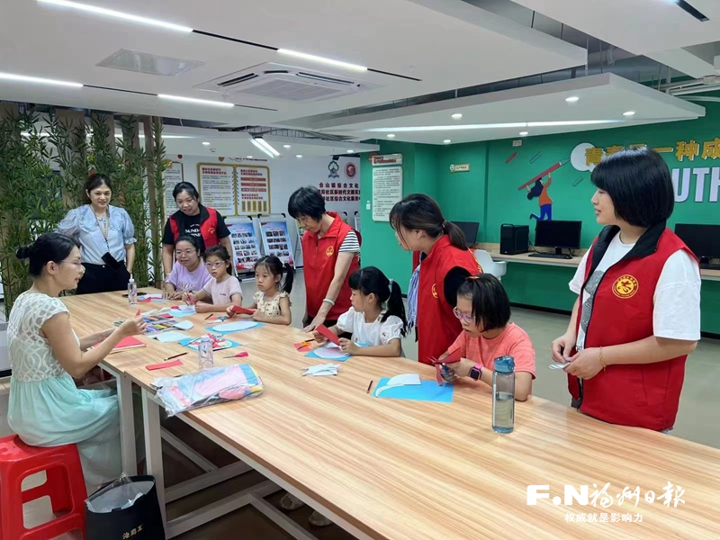

党员干部持续下沉，人居环境越来越好，党群服务越来越优，基层治理越来越细……记者29日获悉，近年来，仓山区探索用组织体系建设、网格管理和党群力量发动，成功构建起区级、镇街、社区（村）、网格“四级贯穿”的治理体系，基层党组织统筹、优化、整合区域组织、力量、资源、服务，实现了基层治理更加精细、基层服务更加精准，党员、干部树牢“只要在仓山地面上的事，就是我们的事”的意识，成为基层治理的先行者和倡导者，基层群众成为基层治理的最大参与者和受益者，书写了创造更高品质美好生活的新篇章。

仓山镇建岭社区党员志愿者服务“四点半课堂”。（仓山镇供图）
党员干部靠前站主动干
基层自治氛围越来越浓
3月25日，周六，仓山镇联建新苑小区里，仓山区人社局党员干部职工，放弃休息时间，对小区房前屋后、背街小巷、绿化带等重点区域进行大清理。在霞湖村，区直机关工委党员干部们忙着对跃进河一支河、二支河周边环境卫生开展集中整治。同一天，仓山区财政国资国企动员30多名干部职工组建6支志愿者队伍，深入盖山镇首山村、叶厦村等地，助力打造干净、整洁、清爽的城市环境。
在仓山区，部门干部职工聚焦落实实施“深学争优、敢为争先、实干争效”推动“党建领航、经济领跑、民生领先”行动、“促党建提升、促发展提速、促民生提质”行动，深入村、社区，持续深入开展爱国卫生运动暨“护河爱水、清洁家园”专项行动的画面随处可见。推动“万名干部下基层”常态化长效化，近一年来，仓山区坚持把爱国卫生运动、“护河爱水 清洁家园”专项行动作为基层党员、干部教育的重要抓手，通过组建党员干部先锋队、设立党员干部示范岗、划分党员干部责任区等方式，探索实践教育，引导党员干部职工在家门口参与小区治理、环境整治等工作，为群众提供看得见、摸得着的服务。
哪里问题突出，哪里需要服务，基层党支部就活跃在哪里。在仓山镇，三高社区港务局宿舍小区党支部书记陈道辉发挥“领头雁”作用，带领小区能人们主动站出来，化身义务油漆工、木工、水泥工、水电工，为小区提升改造提速、节省费用，引导居民自我管理、自我服务，构建老旧无物业小区“共建共享共治”治理新格局。在东升街道，东兴苑小区3名党员“红管家”牵头，亮身份、作表率，担任“近邻联络员”，调动居民参与小区治理的主动性、积极性。在临江街道，三盛巴厘岛小区党支部书记林颖带领“三盛有幸”志愿服务队，让闽剧小演出等公益活动办到居民家门口。在三叉街街道、下渡街道，小区党员、在职党员就近认领网格包干区，及时发现群众诉求。在仓前街道，下沉党员干部队伍认领志愿服务包。在对湖街道，黄以孟志愿服务队伍持续壮大。在上渡街道银杏苑小区，一群退休老党员常态服务邻里……
党员干部靠前站主动干，广泛凝聚起干事合力。今年以来，全区23000多名省、市、区级单位在职党员干部职工常态参与“护河爱水、清洁家园”等专项行动，主动承接“居民点单—网格派单—党员领单”服务模式，落实党员报到和志愿服务有机统一，成为群众身边靓丽的“党建红”。
群众需求落实高效化
基层治理生态越来越好
走进金山街道水都社区党群服务中心，一间温馨的甜品屋格外显眼。约20平方米的空间里，青年创业人员小陈正在忙着打理糕点产品，一些居民坐在里面享受下午茶时光。“这里原是社区的闲置场所，免费给我使用，除了产品售卖，我还会不定期为居民开设公益课堂，免费提供烘焙技能指导。”小陈说。
这是仓山区持续优化党群服务，运用清单化管理推进群众需求落实高效化的生动注脚。“下沉干部和社区干部实时收集记录居民反映的问题，形成征求问题清单，社区、小区党组织牵头，整合驻区单位、共建单位和社会组织等资源库，形成资源清单，镇（街）党（工）委指导社区党组织制定项目清单，精准服务居民。”仓山区委组织部相关负责人介绍。
创业人员在社区找到机遇，初创组织在社区找到市场。在金洲社区，由下沉干部主动对接福建生物工程职业技术学院建立产学研相结合的社区创业实训基地，帮助创业大学生成立上古健康服务中心等6家社会组织，为社区居民提供健康服务、舞蹈培训、机器人课程等各类服务，深受欢迎。
不仅如此，市场资源在社区也能找到供需。在幸福社区，社区积极吸纳辖区药店、理发、超市等17家商户形成“党建联盟”，打造“一刻钟便民生活圈”，推动公益消费成为社区的造血功能，实现以往社区服务由政府购买兜底模式的转变。
仓山区委组织部相关负责人介绍，持续优化党群服务，创新需求共享、优势互补的基层治理生态，目前，全区已引进220多家社会组织入驻小区，为居民开展服务。
部门亮晒比拼争当先锋
群众幸福感持续提升
走进建新镇马榕小区，一些架空层墙体和公共围墙脱落发黑的情况不见了，取而代之的是崭新的白色墙面。“红色楼栋长带队，党员志愿者、热心群众力量一起动手刷白公共墙体，点靓小区环境。”建新镇党委组织委员介绍。
以人居环境整治“小切口”构建基层善治“大格局”，仓山区有效回应群众需求，向关键领域、薄弱区域聚焦，通过清理和建设并举，推动基层基础配套设施更新完善。
部门亮晒比拼争当先锋，盖山镇进一步完善村垃圾收集点建设，根据居民生活习惯和实际需求调整垃圾投放点位，每月对河道污水处理设施进行检修。螺洲镇深化“古厝开门见美”行动，建设“金厝边广场”，全面整治周边卫生环境，为群众创造茶余饭后休闲座谈的好去处。城门镇胪峰社区的“萤火虫”巡逻队常态开展夜间巡逻，有效保障小区安全和谐。
仓山区还注重发挥新媒体平台等作用，主动亮行动、强宣传、晒变化，推动干部勇担先锋、党群各负其责，争当主动作为、务求实效的“实干家”，广泛发动居民及沿街商户共同参与到建设美好仓山的行动中来。
打开仓山区“南台党旗扬”“醉美仓山”微信公众号，以及区政府网站等平台，党建引领基层治理的动态信息不断，部门亮晒比拼争当先锋的氛围十分浓厚，更高品质美好生活的图景在美丽的南台岛徐徐展开。（记者 王玉萍 通讯员 仓组）